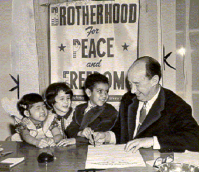

| Stevenson initially considered running for the Senate in 1947, but decided to challenge incumbent Illinois Governor Dwight Green in 1948. Stevenson, a political newcomer, surprised many by winning the election by over half a million votes, the largest majority in Illinois history. |
| Stevenson, believing he had failed as a husband and father, wanted to succeed as Governor. He set an impressive record, putting in long hours in his basement office in the Governor's Mansion---even answering the telephone himself after hours. Stevenson cracked down on gambling, democratized civil service, and supported highway improvements. His refusal to succumb to the paranoia of the "Anxious Age," as he called McCarthyism, haunted him in his future political endeavors. | |
| Governor Stevenson at the State Fairgrounds, Springfield, Illinois, where he officially opened the 1950 Illinois State Fair by setting off fireworks. Stevenson was a popular public speaker, gaining a reputation as an intellectual, with a self-deprecating sense of humor to match. | |
|
As part of United Nations week, Governor Stevenson accepts a United Nations flag from the Springfield Chapter of the Navy Mothers of America. Stevenson participated in the organization of the fledgling international congress that became the United Nations. In 1947, President Harry Truman appointed Stevenson to the Second Session of the United Nations General Assembly. |
| Governor Stevenson signs the document declaring February 17-24, 1952, Brotherhood Week. Stevenson believed that "every age needs men who will redeem the time by living with a vision of things that are to be." Newton Minow, one of Stevenson's law partners, commented that Stevenson "set the pattern for civil rights... his thought became law and policy later." |  |
| At the annual Jefferson-Jackson Dinner on March 29, 1952, Truman announced that he would not seek reelection. Reporters besieged Stevenson, asking if he were a candidate. Two weeks later, he issued a formal statement that he would not seek the presidential nomination. At the Democratic National Convention, however, Stevenson allowed himself to be drafted as the party's candidate for president, stating, "to shirk, to evade, to decline, would be to repay honor with dishonor." |
Go to the next section of photographs.
Return to the Mudd Library home page.
© 2000 Princeton University Library